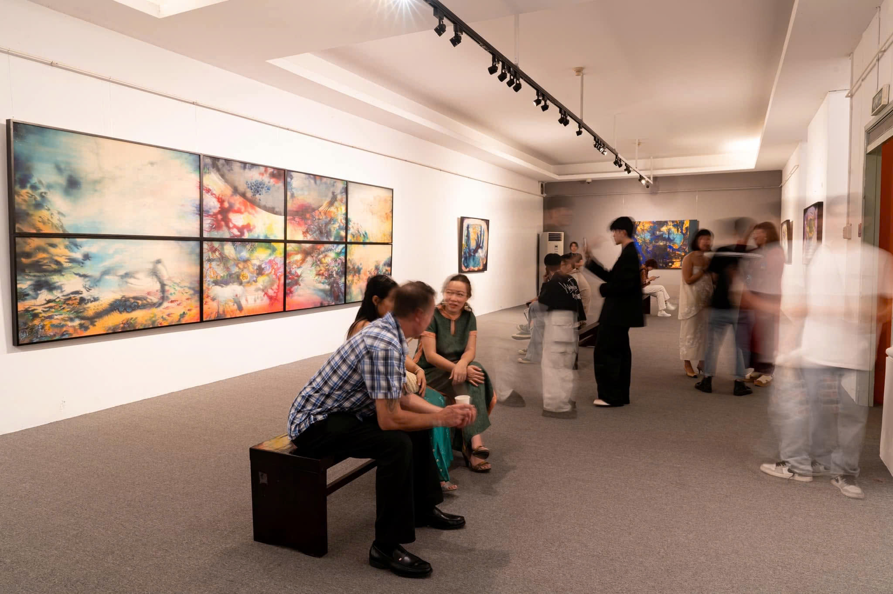
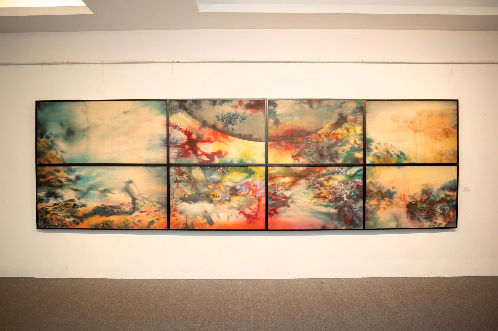
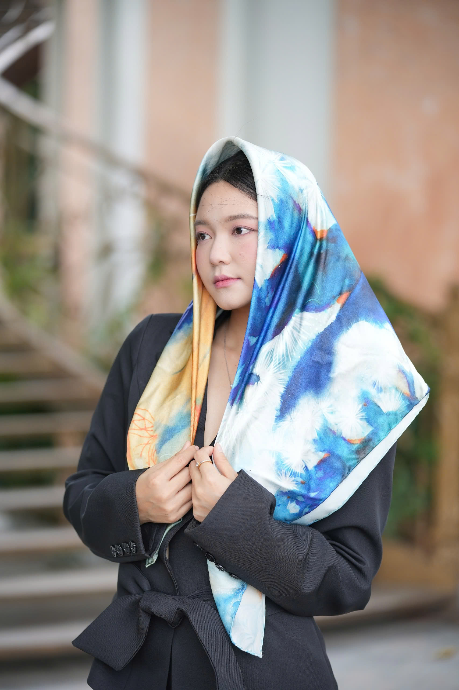
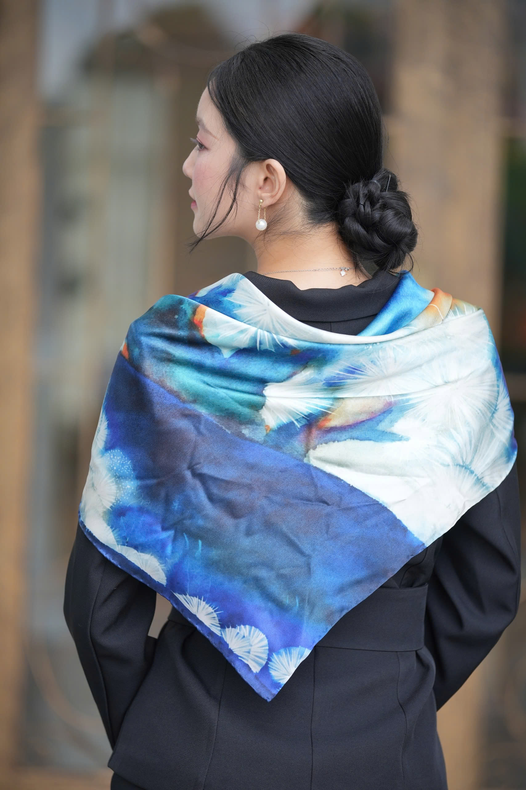
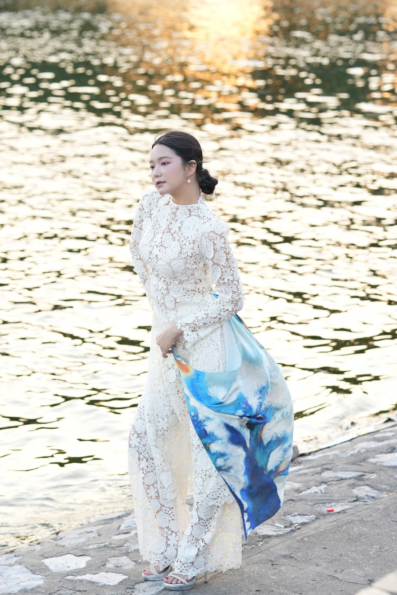

LUMIERE ARTS · ẤN BẢN 01
NGUYỄN VĂN TRINH · 2023
01 · TỪ KHÔNG GIAN HỘI HỌA
Vùng Sống 2
Tư liệu triển lãm bộ Vùng Sống & Nguyên tác trên lụa



Màu nước trên lụa · 100 × 200 cm · 2023
Từ một phần nguyên tác, một hành trình mới trên lụa.
02 · XƯỞNG CHẾ TÁC LỤA TƠ TẰM
Từ mặt tranh đến thớ lụa.
ĐỐI CHIẾU SẮC ĐỘ NGUYÊN TÁC
Họa tiết chuyển thể chuẩn xác trên lụa Bảo Lộc.
Giữ trọn chiều sâu sắc chàm và ánh sáng của tranh lụa


LOOKBOOK · VÙNG SỐNG 2
03 · NHỊP THỞ ĐƯƠNG ĐẠI
Khi hội họa
bước ra phố thị.
Chuyển thể từ một phần nguyên tác Vùng Sống 2
04 · ĐA DIỆN PHONG CÁCH
Bốn góc nhìn. Một bản sắc.

05 · CHẤT LIỆU THƯỢNG HẠNG
Nghệ thuật để mang theo.
100% lụa tơ tằm Bảo Lộc · Satin 16 momme
Mềm mại, óng ả tự nhiên · Viền khâu thủ công tỉ mỉ
LUMIERE ARTS · THE ART OF SILK

The Art of Silk
Vùng Sống 2 · Nguyên tác Nguyễn Văn Trinh